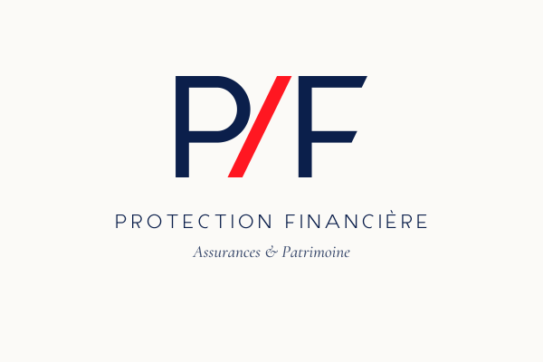
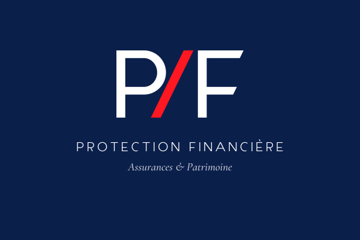
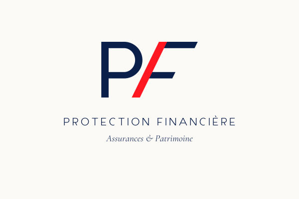
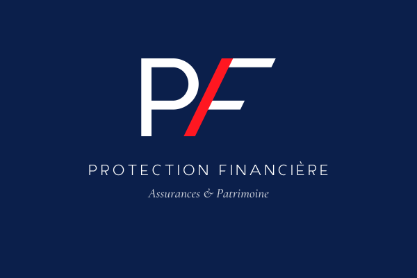
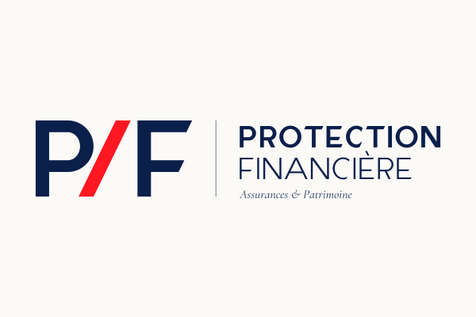
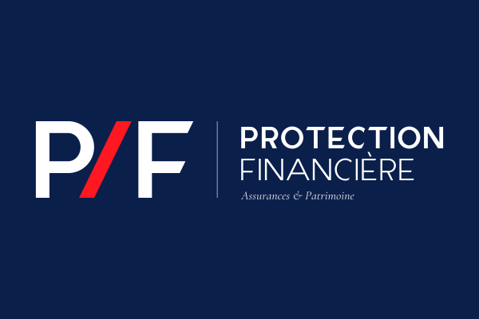
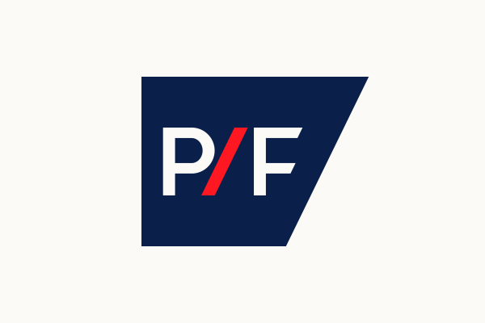
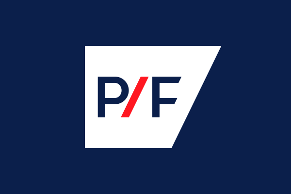
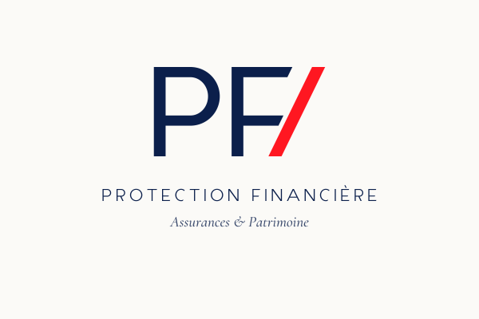
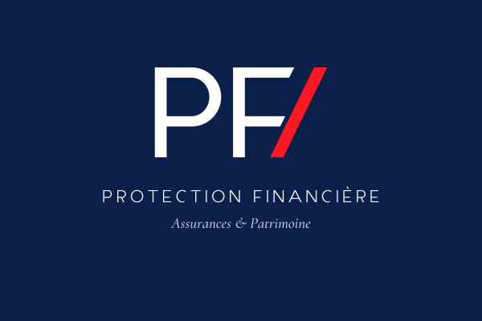
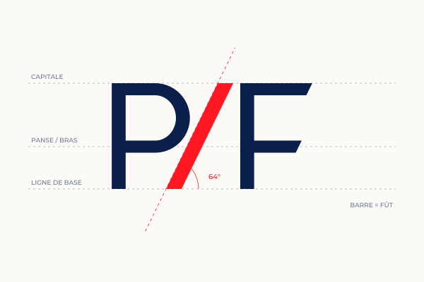
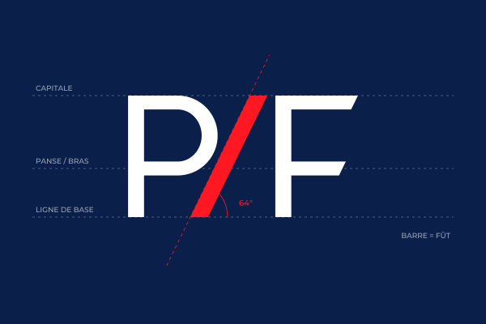
Un caractère dessiné sur mesure, PF Biais, dont toute la géométrie vient de la barre AXA : même angle (64°) pour la barre, les coupes des bras, la jambe du A et l'ouverture du C ; même épaisseur pour la barre et les fûts.












Version 0.1 : les capitales du nom (A C E È F I N O P R T). Ce texte s'affiche avec les fichiers .ttf du dossier police. Le reste de l'alphabet, les chiffres et les bas de casse se dessinent sur les mêmes règles.